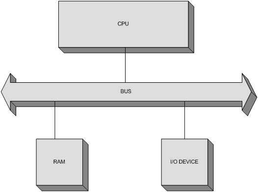
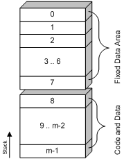

|
picoComputer features a very simple architecture that consists of the CPU, RAM and an I/O Device, connected using a single Bus, as shown on the following figure:

Memory
The memory of a picoComputer contains a maximum of 65536 words, each 16 bits wide. That means that the addresses are 16 bits wide as well. The memory is divided in two logical parts, as depicted on the following figure:

The Fixed Data Area consists of the first 8 memory locations and these locations play the role similar to that of the general-purpose processor Registers found in most of the other processor architectures.
The rest of the memory can be used arbitrarily, but it is important to keep in mind that the call stack starts at the last memory location (the one with the highest address) and grows downward. That's why it is important not to use the memory locations that could be overwritten by the stack as it grows.
I/O Device
The I/O Device is basically a screen and a keyboard in the same case. That way the numerical data can be entered using the keyboard, and the screen can display the values from the picoComputer memory.
As you can see, the design is as simple as possible, which follows the general philosophy of the platform. The input/output operations are blocking calls, which means that there is no parallelism. Consequently, it is not necessary to keep polling a status register (which does not even exist) to check whether an I/O operation is complete. By the time the instruction is executed, so is the I/O operation.
It is worth noting that there is no way to handle interrupts on the picoComputer. The only interrupt that the I/O Device can generate is the one signaling an invalid input. Each interrupt simply aborts the program execution on the picoComputer.
Processor
The processor has two accessible registers, PC and SP. The PC register (Program Counter) points to the current instruction in memory. The SP register is the Stack Pointer. Neither one is can be used in an instruction as an operand.
The value of PC is incremented automatically after every executed instruction, or it can be directly set by a branch instruction. It is assumed that there is a way to initialize PC before the program execution starts. The same applies to the initial content of the memory.
The value of the SP register is updated when executing one of the two instructions used to support sub-routines and that is the only supported way to use the stack. Of course, since the stack is located in RAM like any other data, it can be modified manually, but that is simply not its recommended use.
There is a number of internal registers, but the internal workings of a processor are generally not of any consequence when writing an assembly program. That is why, they fall out of the scope of this article.
|